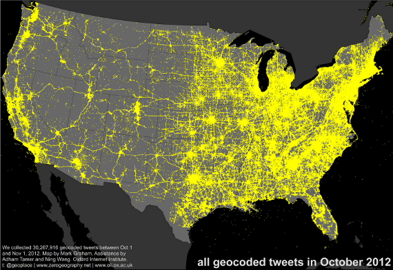
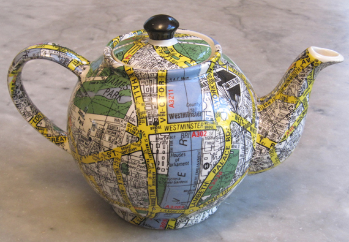

OL3
http://erilem.net/talks/foss4g2013/ol3.html

Intro
Introducing OpenLayers 3
http://ol3js.org/
Outline
- Vision
- Design principles
- Features
- Demos
- Swisstopo application
- Status update
Vision
Where OL3 is going
2D 3D Convergence

(Image courtesy of the OSM-3D.org project)
Client-side rendering 
Maps are Graphics
Where does OL3 fit?
OpenLayers 3
Design principles
SoC - 1/3
(Separation of Concerns)

SoC - 2/3
- Map
- Map has a renderer
- Map has a view
- Map has layers
- Layers have sources
SoC - 3/3
Interactions vs Controls
- Interactions respond to browser events on the map
- Controls have a presence in the DOM
High-Performance
For example:
- Avoid boxing/unboxing operations
- Be nice with the GC and reuse objects
- Use
rAFand watch the frame rate - Redraw as few pixels as possible
- Use Closure Compiler
No opinion on the UI
- Use CSS
- Provide objects for integration with other libs (
ol.Overlay)
Features
- Various tile sources/providers: OSM, XYZ, Stamen, TileJSON, Bing Maps, WMTS, WMS
- Controls: Attribution, Full-screen, Mouse position, Scaleline, Zoom, Zoom slider
- Vector layer: rule-based styling with powerful expression system
- Parsers: GeoJSON, GPX, KML, FE, GML, WMS Capabilities, WMTS Capabilities
- Animations
- Geolocation, Device orientation
Demos
Map with controls
map with controls exampleAnimations
animation examplegeo.admin.ch Third Release
New map.geo.admin.ch viewer
- Based on OpenLayers 3, AngularJS 1.2 & Bootstrap 3.0
- Components
- Mobile & desktop: all in one
- RE2: 650 Ko / RE3: 250 Ko
- In production on 17.10.2013
- Code on Github
Responsiveness - phone
Responsiveness - tablet
Responsiveness - desktop
Demo map.geo.admin.ch
Status update
- 3.0.0 beta1 about to be released
- Things in the work:
- New web site
- New build system
- WebGL vector
- Vector editing